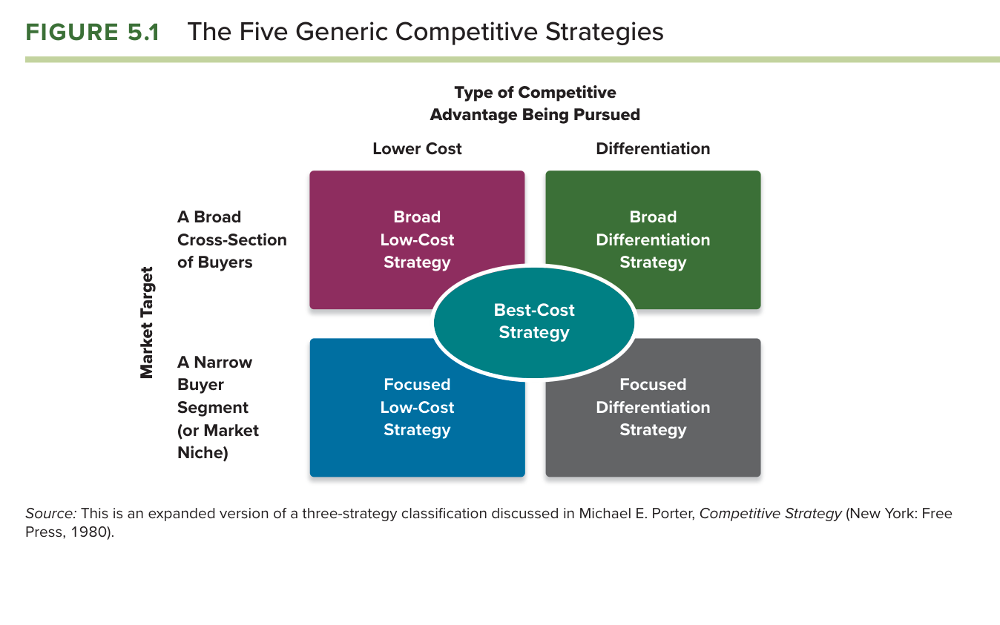
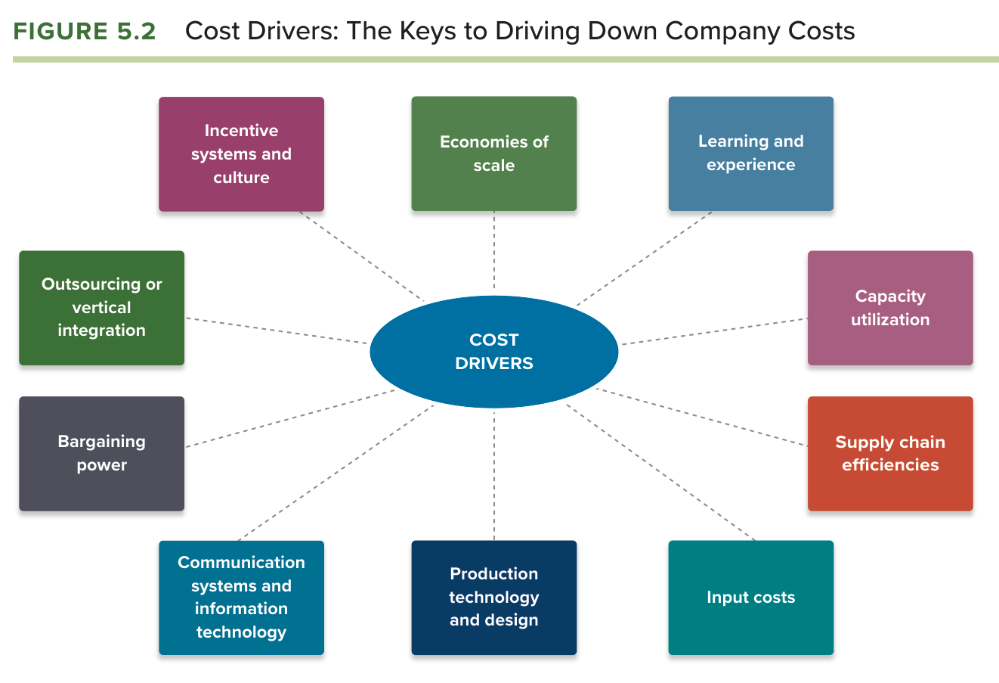
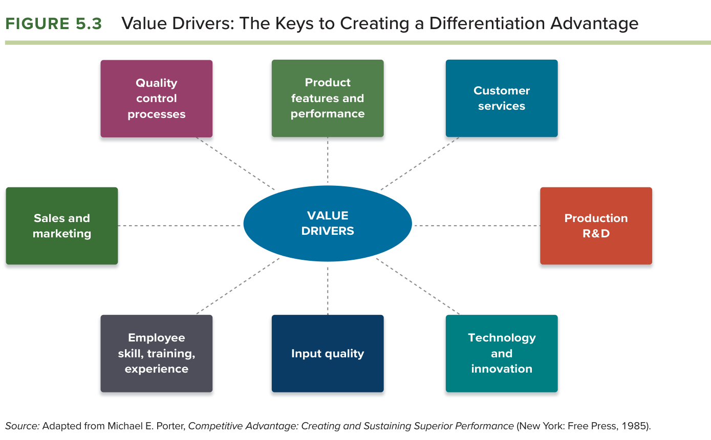
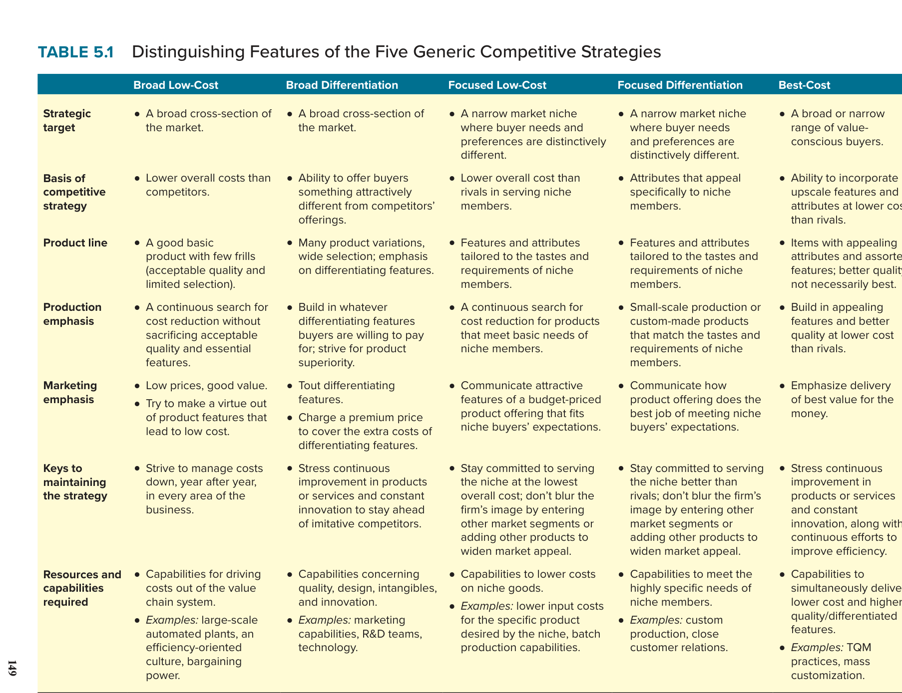
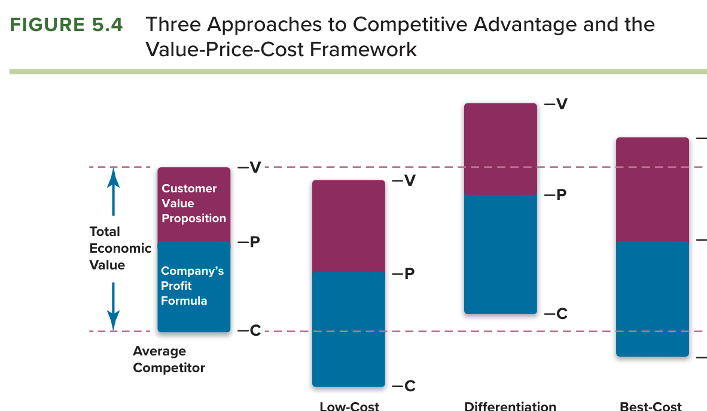

| Buku acuan | Thompson, Peteraf, Gamble & Strickland, Crafting & Executing Strategy: The Quest for Competitive Advantage (edisi ke-24, 2024), Bab 5 “The Five Generic Competitive Strategies”. |
| Framework sesi | Benchmarking sebagaimana ditetapkan silabus untuk sesi 6 bersama Bab 5; uraiannya bersumber dari Bab 4 buku (hlm. 109 sampai 111) dan Illustration Capsule 4.2 serta 4.3. |
| Kasus penerapan | Grant (2010), Case 9 “AirAsia: The World’s Lowest Cost Airline” dan Case 6 “Manchester United: Preparing for Life without Ferguson”. |
| Standar dosen | RPKPS “@2026 AOL Course Outline SM MM_JKT SEMBA”, termasuk rubrik nilai, panduan analisis kasus (Appendix 3), struktur term paper, learning diary, dan sesi framework. |
| Sesi terkait | Sesi 6: Ch. 05 + Benchmarking. Sesi 5: Ch. 04 (VRIN sebagai syarat berbasis sumber daya). Sesi 4: Ch. 03 (lima kekuatan sebagai kondisi pasar). Sesi 2: Ch. 01 (kerangka value-price-cost yang ditutup Figure 5.4). |
Modul ini ditulis sebagai uraian naratif, bukan ringkasan. Setiap sub-bagian framework mengikuti urutan yang sama: pengertian dan kedudukannya dalam buku, uraian setiap dimensi beserta mekanismenya, cara seorang CEO menggunakannya, penerapan pada kasus dengan angka, dan kesalahan yang menurunkan nilai. Bacalah gambar asli buku terlebih dahulu pada setiap sub-bagian, lalu paragraf-paragraf yang menjelaskannya, karena paragraf tersebut merujuk langsung pada unsur-unsur gambar.
Bab 5 dibahas pada sesi keenam. Tujuannya menurut silabus: mahasiswa mampu membedakan lima strategi bersaing dasar (five generic competitive strategies) dan menjelaskan mengapa masing-masing cocok untuk kondisi pasar tertentu. Pada sesi yang sama, kelompok yang bertugas mempresentasikan framework tambahan, yaitu benchmarking (Almahendra, 2026). Pasangan ini masuk akal. Bab 5 adalah bab pertama yang berpindah dari "menganalisis" ke "memilih". Pilihan antara bersaing dengan biaya rendah atau bersaing dengan produk yang berbeda hanya bisa dipertanggungjawabkan kalau perusahaan tahu posisinya dibanding pesaing. Benchmarking adalah alat untuk mengetahui posisi itu. Jadi dosen tampaknya ingin mahasiswa memilih strategi berdasarkan bukti perbandingan, bukan berdasarkan selera.
Bab 5 juga bab yang paling langsung menopang bagian "solusi strategis" dalam term paper. Silabus menuntut solusi yang menyeluruh dan bertumpu pada framework (Almahendra, 2026). Menurut standar buku, setiap alternatif strategi dalam analisis kasus harus bisa ditempatkan di salah satu dari lima kotak Figure 5.1. Pilihan itu lalu harus dibela dengan dua hal: kondisi pasar yang membuat strategi itu berhasil, dan sumber daya perusahaan yang mendukungnya. Untuk mendapat nilai A, mahasiswa harus bisa menjelaskan mengapa strategi yang tidak dipilih akan gagal pada kondisi pasar yang sama. Buku merinci jebakan setiap strategi dengan jelas, dan dosen menilai kemampuan memakai jebakan itu sebagai argumen tandingan.
Prinsip pertama cara berpikir dosen, "framework dulu, baru pendapat", paling terasa di bab ini. Bab 5 memberi kosakata yang tegas. Kalimat "AirAsia itu murah" tidak bernilai. Kalimat "AirAsia menjalankan broad low-cost provider strategy dan memakai tujuh dari sepuluh cost drivers" adalah analisis. Prinsip ketiga, "analisis harus berujung keputusan", tampak pada pernyataan buku bahwa memilih strategi dasar mungkin adalah komitmen terpenting perusahaan, karena pilihan itu menentukan semua tindakan berikutnya (Thompson et al., 2024, hlm. 148). Prinsip ketujuh, "menghubungkan antar framework", tampak pada penutup bab: strategi dasar yang berhasil harus resource-based, artinya ditopang sumber daya perusahaan. Jadi Bab 5 tidak bisa dikerjakan tanpa hasil VRIN test dari Bab 4.
Pasangan dengan benchmarking memberi petunjuk tambahan dengan tingkat keyakinan [Kemungkinan Besar]. Dosen tampaknya ingin menutup lubang yang paling sering muncul dalam presentasi mahasiswa: klaim "kami unggul di biaya" atau "produk kami berbeda" tanpa angka pembanding. Benchmarking memaksa perbandingan aktivitas demi aktivitas dengan pesaing. Hasilnya menentukan kotak Figure 5.1 mana yang jujur untuk perusahaan. Perusahaan yang biayanya ternyata sama dengan pesaing tidak boleh memilih strategi biaya rendah, sekalipun ia menyukainya. Perusahaan yang keunggulan produknya ternyata mudah ditiru tidak boleh memilih strategi diferensiasi.
Benchmarking adalah proses membandingkan cara dan hasil perusahaan dalam mengerjakan suatu aktivitas dengan cara dan hasil perusahaan lain, baik pesaing maupun perusahaan di industri lain, untuk menemukan cara terbaik (best practice) dan menirunya (Thompson et al., 2024, hlm. 109). Framework ini punya empat dimensi. Pertama, apa yang dibandingkan: satu aktivitas tertentu, misalnya cara membeli bahan, cara mengelola persediaan, atau berapa lama menyiapkan pesawat sebelum terbang lagi. Bukan perusahaan secara keseluruhan. Kedua, dengan siapa dibandingkan: pesaing langsung, perusahaan di industri lain yang terbaik di dunia untuk aktivitas itu, atau cabang lain di dalam perusahaan sendiri. Ketiga, ukurannya: biaya per unit aktivitas, waktu, mutu, atau ukuran khas industri. Di maskapai, ukurannya biaya per kursi-kilometer. Di industri panel surya, biaya listrik per kilowatt jam. Keempat, sumber datanya: laporan publik dan analis, kunjungan lapangan, atau lembaga pengumpul data yang menyamarkan nama perusahaan. Hasil akhirnya adalah selisih kinerja yang terukur dan cara terbaik yang harus ditiru untuk menutup selisih itu.
Benchmarking lahir dari Xerox, produsen mesin fotokopi Amerika, pada akhir 1970-an. Saat itu Xerox menemukan bahwa pesaing dari Jepang menjual mesin fotokopi dengan harga setara biaya produksi Xerox. Buku mencatat Xerox lalu membandingkan diri bukan hanya dengan pesaing mesin kantor, tetapi dengan perusahaan mana pun yang terbaik di dunia untuk aktivitas tertentu (Thompson et al., 2024, hlm. 109). Dua contoh buku yang paling mendidik adalah Toyota dan Southwest Airlines. Toyota mendapat ide sistem persediaan tepat waktu (just-in-time) dari mengamati cara supermarket Amerika mengisi ulang raknya. Southwest Airlines, maskapai berbiaya rendah pelopor di Amerika yang modelnya ditiru AirAsia, mempersingkat waktu pesawat di darat dengan mempelajari kru pit balap mobil. Keduanya menunjukkan bahwa cara terbaik sering ditemukan di luar industri sendiri. Illustration Capsule 4.3 melengkapinya dengan batas etika: perusahaan tidak boleh membicarakan biaya langsung dengan pesaing kalau biaya adalah unsur penetapan harga, karena bisa dianggap persekongkolan. Data pesaing harus diperoleh lewat pihak ketiga atau sumber publik.
Hubungan benchmarking dengan Bab 5 ada di dua tempat. Pertama, pada strategi biaya rendah, benchmarking adalah cara mengetahui cost drivers mana yang sudah dimanfaatkan dan mana yang belum. Selisih biaya per aktivitas terhadap pesaing menunjukkan di mana pemicu biaya belum bekerja. Kedua, pada strategi diferensiasi, benchmarking terhadap value drivers menunjukkan atribut mana yang benar-benar lebih baik dari pesaing dan mana yang hanya dianggap lebih baik. Manfaatnya dalam bisnis internasional: perusahaan dari negara berkembang bisa membandingkan diri dengan pemimpin dunia sebelum bersaing dengannya. AirAsia menjadikan Ryanair (maskapai berbiaya rendah terbesar di Eropa) dan Southwest sebagai tolok ukur sejak awal. Hasilnya, biaya per kursi-kilometer AirAsia 11,66 sen ringgit, sebanding dengan pemimpin dunia (Grant, 2010). Keterbatasannya: benchmarking hanya menemukan cara yang sudah ada. Ia bisa membuat perusahaan setara dengan yang terbaik, tetapi tidak dengan sendirinya membuat perusahaan lebih unggul. Untuk unggul, perusahaan harus menemukan cara baru yang belum punya tolok ukur.
Bab 5 berjudul The Five Generic Competitive Strategies. Ada empat tujuan pembelajaran: memahami apa yang membedakan lima strategi dasar dan mengapa sebagian cocok untuk kondisi tertentu; mengenali jalan utama menuju keunggulan biaya rendah; mengenali jalan utama menuju keunggulan diferensiasi; dan menjelaskan ciri best-cost provider strategy sebagai gabungan keduanya (Thompson et al., 2024, hlm. 125). Framework yang harus dikuasai ada sebelas: five generic competitive strategies (Figure 5.1), sepuluh cost drivers (Figure 5.2), perombakan value chain system untuk menurunkan biaya (Capsule 5.1), kondisi dan jebakan low-cost provider strategy, delapan value drivers (Figure 5.3), empat rute menyampaikan nilai unggul termasuk signaling value, kondisi dan jebakan differentiation strategy, focused strategies beserta kondisi dan risikonya (Capsule 5.2 dan 5.3), best-cost provider strategy beserta kondisi dan risikonya (Capsule 5.4), ciri pembeda lima strategi (Table 5.1) dan sifat resource-based, serta tiga pendekatan keunggulan dalam value-price-cost framework (Figure 5.4).

Competitive strategy adalah rencana permainan manajemen untuk memperkuat posisi di pasar dan unggul dari pesaing. Tidak ada dua perusahaan yang strateginya persis sama. Tetapi kalau detailnya dikupas, hanya ada dua hal besar yang membedakan satu strategi dari yang lain: apakah pasar yang dibidik luas atau sempit, dan apakah keunggulan yang dikejar berupa biaya lebih rendah atau produk yang berbeda (Thompson et al., 2024, hlm. 127). Dua hal itu menghasilkan empat pilihan ditambah satu gabungan, seperti pada Figure 5.1. Broad low-cost provider strategy: biaya lebih rendah dari pesaing untuk produk yang sebanding, dijual ke pembeli yang luas, biasanya dengan harga lebih murah. Broad differentiation strategy: produk dibuat berbeda dengan ciri yang disukai banyak pembeli. Focused low-cost strategy: melayani segmen sempit dengan biaya lebih rendah dari pesaing. Focused differentiation strategy: melayani segmen sempit dengan produk yang disesuaikan khusus. Best-cost provider strategy, di tengah gambar: memberi ciri kelas atas dengan harga lebih murah dari pesaing yang setara.
Buku menegaskan bahwa memilih salah satu dari lima strategi ini mungkin adalah komitmen terpenting perusahaan. Setiap strategi menentukan tema besar cara mengalahkan pesaing, memberi batas untuk bergerak, dan menuntut perbedaan pada lini produk, cara produksi, cara pemasaran, dan cara mempertahankan strategi (Thompson et al., 2024, hlm. 148). Bagi seorang CEO, hal terpenting dari Figure 5.1 adalah bahwa dua sumbunya bukan pilihan bebas. Perusahaan yang memilih pasar luas harus punya skala besar. Perusahaan yang memilih diferensiasi harus punya kemampuan yang sulit ditiru. Jadi kotak yang dipilih harus cocok dengan hasil analisis Bab 3 tentang industri dan Bab 4 tentang sumber daya perusahaan sendiri.
Ada dua cara utama mencapai keunggulan biaya. Pertama, mengerjakan aktivitas di value chain lebih hemat daripada pesaing. Kedua, merombak value chain system supaya aktivitas yang menimbulkan biaya bisa dihapus atau dilewati (Thompson et al., 2024, hlm. 128). Untuk cara pertama, buku menegaskan bahwa tidak ada aktivitas yang boleh luput dari pemeriksaan biaya. Perhatian khusus harus diberikan pada cost drivers, yaitu faktor yang berpengaruh besar pada biaya dan bisa dipakai sebagai tuas untuk menurunkannya.

Figure 5.2 memuat sepuluh cost drivers. Buku menjelaskan cara memakai masing-masing (Thompson et al., 2024, hlm. 129 sampai 131). Pertama, economies of scale: biaya per unit turun saat skala produksi naik. Contoh buku: Anheuser-Busch, produsen bir Budweiser, sanggup membayar iklan 7 juta dolar untuk 30 detik saat final liga football Amerika (Super Bowl) karena biaya itu dibagi ke jutaan kaleng bir yang terjual. Kedua, learning and experience: biaya turun seiring pengalaman karyawan. Ketiga, capacity utilization: mengoperasikan fasilitas pada kapasitas penuh supaya biaya tetap tersebar ke lebih banyak unit. Semakin mahal asetnya, semakin besar kerugian kalau aset menganggur. Keempat, supply chain efficiencies: bekerja sama dengan pemasok dan memakai persediaan tepat waktu. Kelima, input costs: mengganti bahan dengan yang lebih murah selama mutu tidak turun. Keenam, bargaining power: memakai kekuatan tawar untuk mendapat harga lebih murah dari pemasok. Contoh buku: Home Depot, jaringan toko bahan bangunan terbesar di Amerika, kira-kira seperti Depo Bangunan atau Mitra10 dalam ukuran raksasa. Ketujuh, communication systems and information technology: memakai sistem daring dan perangkat lunak untuk efisiensi. Kedelapan, production technology and design: memperbaiki desain proses dan memakai teknologi produksi maju. Contoh buku: pabrik komputer Dell di Texas yang sangat otomatis dan merakit sesuai pesanan. Kesembilan, outsourcing or vertical integration: jeli melihat mana yang lebih murah untuk tiap aktivitas, dikerjakan sendiri atau diserahkan ke pihak luar (outsourcing). Kadang menyerahkan ke spesialis luar lebih murah karena keahlian dan volume mereka lebih besar. Kadang justru mengambil alih pekerjaan pemasok atau penyalur (vertical integration) lebih murah karena menghapus margin mereka. Kesepuluh, incentive systems and culture: memotivasi karyawan lewat insentif dan budaya. Contoh buku: Nucor, produsen baja Amerika yang menyebut dirinya "perusahaan dengan 20.000 rekan setim".
Cara kedua, merombak value chain system, bisa menghasilkan penghematan yang jauh lebih besar. Ada tiga pendekatan. Pertama, menjual langsung ke konsumen dan melewati distributor. Ini penting karena biaya grosir dan eceran sering mencapai 35 sampai 50 persen dari harga akhir. Kedua, merampingkan operasi dengan menghapus langkah kerja yang tidak menambah nilai. Contoh buku: Walmart, jaringan toko ritel terbesar di Amerika (bayangkan hypermarket seperti Transmart, tetapi ribuan toko), memindahkan barang langsung dari truk pemasok ke truk yang menuju toko tanpa disimpan di gudang. Ketiga, meminta pemasok berlokasi dekat pabrik supaya biaya angkut dan gudang berkurang (Thompson et al., 2024, hlm. 131). Buku memberi dua contoh perombakan besar. Nucor mengganti tanur tinggi tradisional dengan tanur busur listrik yang melebur besi tua, sehingga banyak tahap produksi baja hilang. Southwest Airlines menyiapkan pesawat di darat hanya 25 menit dibanding 45 menit pesaing, sehingga pesawatnya terbang lebih banyak jam per hari, tanpa nomor kursi, tanpa transfer bagasi ke maskapai lain, dan tanpa kelas satu. Contoh Southwest inilah cetak biru AirAsia. Bagian C akan menunjukkan cost drivers mana yang dipakai AirAsia dan mana yang tidak.
Illustration Capsule 5.1 menunjukkan strategi biaya rendah di industri jasa. Vanguard adalah perusahaan pengelola dana investasi (reksa dana) terbesar di Amerika. Vanguard memelopori reksa dana indeks pasif, yaitu dana yang hanya mengikuti indeks pasar tanpa dikelola aktif, sehingga biayanya sangat rendah. Rasio biaya rata-ratanya 0,09 persen, dibanding 0,54 persen rata-rata industri. Biaya rendah itu ditopang oleh struktur kepemilikan oleh nasabah sendiri (jadi tidak ada pemegang saham luar yang minta laba), organisasi yang ramping, dan strategi menjadi pengikut cepat yang membuatnya mencapai skala besar lebih cepat. Hasilnya, dana kelolaan lebih dari 7,7 triliun dolar dan tekanan pada pesaing untuk ikut menurunkan biaya, yang disebut "efek Vanguard" (Thompson et al., 2024, hlm. 132). Buku juga mengingatkan: perusahaan berbiaya rendah memang hemat, tetapi tidak pelit untuk investasi yang menurunkan biaya. Walmart mengadopsi teknologi baru lebih awal dari pesaing dan mempertahankan keunggulan biayanya lebih dari 45 tahun (Thompson et al., 2024, hlm. 133).
Strategi biaya rendah semakin kuat kalau lima kondisi terpenuhi: persaingan harga sengit; produk pesaing pada dasarnya sama dan mudah didapat; hanya sedikit cara membuat produk berbeda yang dihargai pembeli; pembeli mudah pindah ke penjual lain; dan pembeli peka harga atau punya kekuatan menawar (Thompson et al., 2024, hlm. 133 sampai 134). Logikanya sederhana. Dalam kondisi seperti itu, harga menjadi satu-satunya medan persaingan. Produsen dengan biaya terendah paling mampu memenangkan pembeli yang peka harga, menetapkan harga terendah di pasar, dan tetap untung saat perang harga terjadi. Kelima kondisi ini adalah daftar periksa sebelum memilih kotak biaya rendah di Figure 5.1. Industri penerbangan jarak pendek memenuhi hampir semuanya.
Buku merinci tiga jebakan dan satu risiko sisa. Jebakan pertama dan terbesar: terlalu agresif memotong harga. Penjualan yang lebih banyak tidak otomatis berarti laba yang lebih besar. Contoh angka buku: perusahaan menjual 1.000 unit dengan harga 10 dolar, biaya 9 dolar, laba 1 dolar per unit. Kalau harga dipotong 5 persen menjadi 9,50 dolar, laba per unit tinggal 0,50 dolar. Penjualan harus naik 100 persen, menjadi 2.000 unit, hanya untuk kembali ke laba semula (Thompson et al., 2024, hlm. 134). Jebakan kedua: mengandalkan cara hemat yang mudah ditiru pesaing, sehingga keunggulannya cepat hilang. Jebakan ketiga: terlalu terpaku pada biaya sampai produk menjadi terlalu miskin fitur, atau tidak sadar bahwa pembeli mulai mau membayar lebih untuk fitur tambahan. Risiko sisanya: pesaing yang inovatif menemukan cara yang lebih murah lagi, dan investasi besar pada cara operasi lama membuat perpindahan menjadi mahal. Bagi CEO, contoh angka tadi adalah alasan paling kuat untuk tidak menjadikan harga sebagai senjata pertama. Keunggulan biaya paling bernilai justru ketika harga tidak diturunkan, dan selisih biaya dinikmati sebagai laba.
Strategi diferensiasi cocok ketika kebutuhan pembeli terlalu beragam untuk dipuaskan oleh satu produk standar. Intinya: menawarkan ciri unik yang oleh banyak pembeli dianggap menarik dan layak dibayar lebih (Thompson et al., 2024, hlm. 135). Kalau berhasil, perusahaan bisa memasang harga premium, menjual lebih banyak, dan mendapat pelanggan setia. Tetapi diferensiasi hanya menambah laba kalau harga yang lebih tinggi atau penjualan yang lebih besar melebihi biaya tambahan untuk membuat produk berbeda. Buku menegaskan diferensiasi bukan hanya urusan bagian pemasaran dan tidak terbatas pada mutu dan layanan. Peluangnya ada di sepanjang value chain. Cara paling sistematis adalah memusatkan perhatian pada value drivers, yaitu faktor yang paling efektif menciptakan perbedaan.

Figure 5.3 memuat delapan value drivers (Thompson et al., 2024, hlm. 135 sampai 137). Pertama, product features and performance: fitur dan kinerja produk, termasuk keselamatan, gaya, dan ukuran. Kedua, customer services: layanan pelanggan seperti pengiriman, pengembalian, dan perbaikan. Ketiga, production R&D: riset produksi yang memungkinkan pesanan khusus dan variasi produk. Keempat, technology and innovation: inovasi yang memberi keunggulan sebagai yang pertama di pasar. Kelima, quality control processes: perbaikan mutu terus-menerus yang mengurangi cacat dan memungkinkan garansi lebih panjang. Keenam, sales and marketing: pemasaran dan pembangunan merek. Ini bisa menciptakan perbedaan bahkan ketika perbedaan nyatanya kecil. Buku mencontohkan uji rasa tanpa label: peminum setia Pepsi dan Coca-Cola pun sulit membedakan keduanya. Ketujuh, input quality: bahan baku bermutu tinggi. Contoh buku: Starbucks memakai spesifikasi ketat untuk biji kopi dari pemasoknya. Kedelapan, employee skill, training, experience: karyawan yang terampil menghasilkan ide inovasi dan mutu. Seperti pada biaya, value chain system juga bisa dirombak untuk diferensiasi, lewat kerja sama dengan penyalur dan pemasok. Contoh buku: Coca-Cola pernah mengambil alih perusahaan pembotolan yang bermasalah, memperbaikinya, lalu melepasnya kembali.
Buku memberi empat rute untuk menawarkan sesuatu yang tidak bisa ditawarkan pesaing (Thompson et al., 2024, hlm. 138 sampai 139). Rute pertama, yang paling sering dilupakan: memasukkan ciri yang menurunkan biaya pembeli dalam memakai produk. Contoh: komponen yang sudah dipotong sesuai ukuran, pengiriman tepat waktu, alat hemat listrik, atau interval servis yang lebih panjang. Rute kedua: fitur berwujud yang meningkatkan kepuasan, seperti fungsi, desain, keandalan, dan kemudahan. Rute ketiga: fitur tak berwujud yang memberi kepuasan bukan karena fungsi, misalnya status dan gengsi. Contoh buku: Bentley (mobil mewah Inggris), Louis Vuitton, dan Cartier (perhiasan mewah Prancis), atau Tesla yang menarik pembeli peduli lingkungan. Rute keempat: signaling value, yaitu memberi tanda tentang nilai produk kepada pembeli. Ini perlu karena kadang pembeli sulit menilai produk sebelum memakainya. Tandanya bisa berupa harga tinggi yang menyiratkan mutu, kemasan yang lebih menarik, iklan yang menonjolkan keunggulan, brosur yang bagus, dan kemewahan tempat penjual.
Signaling value sangat penting dalam empat keadaan: ketika perbedaan produk bersifat tak berwujud dan subjektif, ketika pembeli membeli untuk pertama kali, ketika pembelian ulang jarang terjadi, dan ketika pembeli tidak berpengalaman (Thompson et al., 2024, hlm. 139). Buku kemudian menegaskan syarat sumber dayanya. Diferensiasi butuh kemampuan di layanan, pemasaran, merek, dan teknologi yang bukan hanya cocok dengan strategi, tetapi juga lebih unggul dari pesaing. Contoh buku: Mayo Clinic, rumah sakit ternama di Amerika, punya keahlian dan alat khusus untuk penyakit tertentu yang tidak mampu ditiru kebanyakan rumah sakit lain. Pendekatan diferensiasi yang paling berhasil adalah yang sulit ditiru. Pesaing yang cakap pada akhirnya bisa meniru hampir semua fitur produk. Ciri tak berwujud yang rumit secara sosial, seperti reputasi dan hubungan jangka panjang, jauh lebih sulit ditiru. Diferensiasi yang menciptakan switching cost (biaya pindah ke pesaing) juga memberi keunggulan yang bertahan. Contoh buku: banyak orang tidak pindah dari Microsoft Office walaupun ada program lain yang fiturnya lebih baik, karena sudah terbiasa. Bagi CEO, rute pertama layak diperhatikan khusus, karena nilainya bisa dihitung oleh pembeli bisnis dalam angka, sehingga paling mudah dibela di depan pembeli yang rasional.
Diferensiasi paling berhasil dalam empat kondisi: kebutuhan pembeli beragam, seperti di restoran dan majalah; ada banyak cara membuat produk berbeda yang dihargai pembeli, seperti di hotel dan kosmetik; sedikit pesaing yang memakai pendekatan diferensiasi yang sama, sehingga tidak berdesakan; dan teknologi berubah cepat sehingga persaingan berputar pada fitur baru (Thompson et al., 2024, hlm. 139 sampai 140). Barang komoditas seperti bahan kimia dan hasil pertanian memberi sedikit peluang diferensiasi. Kondisi ketiga mengingatkan bahwa perusahaan yang berjalan di jalannya sendiri menghadapi lebih sedikit persaingan langsung daripada yang mencoba mengalahkan pesaing pada ciri yang sama.
Jebakan diferensiasi ada tiga besar dan tiga tambahan. Tiga jebakan besar: bertumpu pada ciri yang mudah dan cepat ditiru; pembeli ternyata tidak menghargai ciri unik itu, sehingga penjualan mengecewakan; dan terlalu banyak belanja untuk membuat perbedaan sampai laba terkikis. Kunci diferensiasi yang menguntungkan adalah menjaga biaya per unit untuk berbeda tetap di bawah harga premium yang bisa diperoleh (Thompson et al., 2024, hlm. 140). Tiga jebakan tambahan: perbedaan yang terlalu kecil sehingga pelanggan tidak setia; berlebihan sampai fitur melampaui kebutuhan kebanyakan pembeli; dan harga premium terlalu tinggi sampai dianggap memeras (Thompson et al., 2024, hlm. 141). Buku menutup dengan peringatan yang penting untuk kasus AirAsia: strategi biaya rendah bisa mengalahkan strategi diferensiasi ketika pembeli sudah puas dengan produk dasar dan tidak merasa fitur tambahan layak dibayar lebih.
Yang membedakan focused strategy dari strategi luas adalah perhatian yang dipusatkan pada bagian sempit dari pasar (niche). Ceruk itu bisa berupa wilayah, kelompok pelanggan, atau jenis produk (Thompson et al., 2024, hlm. 141). Contoh buku: Community Coffee, merek kopi yang hanya fokus di negara bagian Louisiana dan sekitarnya; Zipcar, penyewaan mobil per jam di kota besar; dan Airbnb. Focused low-cost strategy melayani pembeli ceruk dengan biaya dan harga lebih rendah dari pesaing. Caranya sama dengan strategi biaya rendah luas, yaitu memakai cost drivers dan melewati aktivitas yang tidak perlu. Bedanya hanya ukuran kelompok pembeli. Contoh buku: Costco, Sam's Club, dan BJ's, yaitu toko grosir dengan sistem keanggotaan (kira-kira seperti Lotte Grosir), yang menjual dalam jumlah besar dengan harga grosir. Illustration Capsule 5.2 menunjukkan strategi ini di layanan kesehatan. Clinicas del Azucar adalah jaringan klinik diabetes di Meksiko untuk penduduk berpenghasilan rendah. Dengan algoritma diagnosis, layanan lewat ponsel, dan alur pasien yang menghapus rujukan berulang, klinik ini menurunkan biaya perawatan lebih dari 70 persen dan waktu kunjungan lebih dari 80 persen (Thompson et al., 2024, hlm. 142).
Focused differentiation strategy menawarkan produk unggul yang disesuaikan dengan selera kelompok pembeli sempit. Syaratnya dua: ada segmen yang mencari ciri khusus, dan perusahaan mampu menonjol dari pesaing di ceruk yang sama. Contoh buku: Four Seasons (jaringan hotel mewah) dan Whole Foods (supermarket makanan organik premium di Amerika, kira-kira seperti Ranch Market). Illustration Capsule 5.3 bercerita tentang Canada Goose, merek jaket musim dingin mewah dari Kanada yang dijual hampir seribu dolar per jaket dan tidak pernah didiskon. Pada 2001, CEO-nya memutuskan berhenti membuat produk untuk merek lain dan tetap berproduksi di Kanada saat pesaing pindah ke Asia. Hasilnya, pendapatan tumbuh dari sekitar 3 juta dolar menjadi lebih dari 830 juta dolar pada 2019 (Thompson et al., 2024, hlm. 143).
Focused strategy semakin menarik kalau lima kondisi terpenuhi: ceruk cukup besar untuk untung dan masih tumbuh; pemimpin industri memilih tidak masuk ke ceruk itu; sulit atau mahal bagi pesaing besar melayani kebutuhan khusus ceruk sekaligus pelanggan utamanya; industri punya banyak ceruk sehingga tiap pemain bisa memilih ceruk yang cocok; dan sedikit pesaing yang membidik segmen yang sama (Thompson et al., 2024, hlm. 143 sampai 144). Risikonya ada empat. Pertama, pesaing di luar ceruk menemukan cara menandingi. Contoh buku: Hilton, jaringan hotel global, punya banyak merek dari Waldorf Astoria yang mewah sampai Hampton yang murah, sehingga bisa masuk ke setiap ceruk penginapan. Kedua, selera anggota ceruk bergeser ke arah pasar umum sehingga pesaing besar mudah masuk. Ketiga, ceruk menjadi terlalu menarik sehingga dibanjiri pesaing. Keempat, pertumbuhan ceruk melambat (Thompson et al., 2024, hlm. 145). Risiko pertama paling relevan untuk maskapai berbiaya rendah. Maskapai besar seperti Singapore Airlines dan Qantas menjawab AirAsia dengan membuat merek berbiaya rendah sendiri, yaitu Scoot dan Jetstar.
Best-cost provider strategy adalah gabungan biaya rendah dan diferensiasi. Syarat menjalankannya: perusahaan harus mampu memasukkan ciri kelas atas ke produknya dengan biaya lebih rendah dari pesaing (Thompson et al., 2024, hlm. 145). Sasarannya adalah pembeli yang sadar nilai (value-conscious), yang berbeda dari pembeli yang hanya mencari harga termurah. Mereka menghindari produk murahan, tetapi juga menghindari produk termahal. Mereka mau membayar harga wajar untuk fitur tambahan yang berguna. Kelompok ini sering merupakan bagian pasar yang sangat besar. Buku membedakannya dengan tegas. Strategi ini berbeda dari biaya rendah, karena fitur tambahan menimbulkan biaya tambahan. Berbeda pula dari diferensiasi, karena butuh kemampuan membuat fitur kelas atas dengan biaya lebih murah dari produsen kelas atas lain (Thompson et al., 2024, hlm. 146). Contoh klasiknya Lexus, merek mobil mewah milik Toyota. Lexus dirancang setara Mercedes dan BMW, dijual lewat dealer terpisah dari Toyota, tetapi diproduksi dengan keahlian Toyota membuat mobil bermutu dengan biaya rendah. Karena itu Lexus bisa dijual lebih murah dari pesaing sekelasnya.
Strategi ini paling berhasil di pasar yang sudah terbiasa dengan produk berbeda-beda dan punya banyak pembeli sadar nilai yang bisa dibujuk membeli produk kelas menengah. Juga berhasil saat resesi, ketika banyak pembeli menjadi lebih sadar nilai. Tetapi tanpa kemampuan membuat fitur kelas atas dengan biaya rendah, strategi ini tidak dianjurkan (Thompson et al., 2024, hlm. 146 sampai 147). Illustration Capsule 5.4 menunjukkan versi terfokusnya: Trader Joe's, jaringan toko bahan makanan berukuran kecil di Amerika yang hampir semua produknya bermerek sendiri. Tokonya hanya menjual sekitar 4.000 jenis produk, dibanding lebih dari 50.000 di supermarket besar seperti Kroger. Karena jenisnya sedikit, tokonya kecil, sewanya murah, dan perputaran barangnya cepat. Hasilnya penjualan lebih dari 2.000 dolar per kaki persegi, hampir dua kali Whole Foods, sekaligus dinilai konsumen sebagai toko bahan makanan dengan mutu terbaik (Thompson et al., 2024, hlm. 147). Risiko terbesar strategi ini adalah terjepit: dari bawah oleh produsen berbiaya rendah yang harganya lebih murah, dari atas oleh produsen kelas atas yang fiturnya lebih baik. Supaya tidak terjepit, biaya membuat fitur kelas atas harus benar-benar jauh lebih rendah dari pesaing kelas atas, dan fiturnya harus benar-benar jauh lebih baik dari pemimpin biaya rendah (Thompson et al., 2024, hlm. 148). Risiko terjepit inilah yang harus diperhitungkan setiap kali ada usulan agar maskapai berbiaya rendah menambah kelas bisnis.

Table 5.1 membandingkan lima strategi pada tujuh hal: sasaran, dasar keunggulan, lini produk, penekanan produksi, penekanan pemasaran, kunci mempertahankan strategi, dan sumber daya yang dibutuhkan (Thompson et al., 2024, hlm. 149). Broad low-cost: pasar luas, produk dasar yang baik, produksi yang terus mencari penghematan, pemasaran yang menonjolkan harga murah, kunci berupa biaya yang terus ditekan. Broad differentiation: pasar luas, banyak variasi produk, produksi yang membangun fitur bernilai, pemasaran yang menonjolkan fitur berbeda dan harga premium, kunci berupa inovasi terus-menerus dan pesan merek yang konsisten. Dua focused strategy mengikuti pola yang sama di ceruk sempit, dengan kunci berupa komitmen total melayani ceruk lebih baik dari siapa pun. Best-cost: pembeli sadar nilai, produk dengan fitur baik sampai sangat baik pada harga di bawah pesaing setara, kunci berupa keahlian khusus membuat fitur kelas atas dengan biaya rendah.
Penutup bab menegaskan bahwa strategi dasar yang berhasil bersifat resource-based. Strategi harus cocok dengan keadaan dalam perusahaan dan ditopang sumber daya, pengetahuan, dan kemampuan yang sesuai (Thompson et al., 2024, hlm. 148). Biaya rendah butuh keahlian memakai cost drivers lebih baik dari pesaing atau kemampuan melewati aktivitas yang tidak perlu. Diferensiasi butuh kemampuan memakai value drivers lebih baik dari pesaing. Focused strategy butuh kemampuan memuaskan pembeli ceruk dengan luar biasa. Best-cost butuh kemampuan membuat fitur kelas atas dengan biaya rendah. Untuk semua strategi, keunggulan hanya bertahan kalau sumber dayanya sulit ditiru dan tidak ada penggantinya. Artinya, empat tes VRIN dari Bab 4 adalah syarat masuk untuk setiap pilihan di Bab 5.

Figure 5.4 menutup bab dengan mengembalikan lima strategi ke kerangka Bab 1. Gambar itu membandingkan pesaing rata-rata dengan tiga strategi pada tiga besaran: nilai yang dirasakan pembeli (V), harga (P), dan biaya (C). Selisih V dan C adalah total economic value. Ia terbagi menjadi customer value proposition (V dikurangi P, yaitu bagian yang dinikmati pembeli) dan profit formula (P dikurangi C, yaitu bagian yang dinikmati perusahaan) (Thompson et al., 2024, hlm. 150 sampai 151). Strategi biaya rendah mencapai C lebih rendah dari pesaing rata-rata dengan mengorbankan sebagian V. Kalau penurunan C lebih besar dari penurunan V, total nilai ekonominya lebih besar. Dengan harga yang lebih rendah, ia menawarkan V dikurangi P yang lebih menarik bagi pembeli sekaligus P dikurangi C yang lebih baik bagi perusahaan. Strategi diferensiasi mungkin punya C lebih tinggi dari pesaing rata-rata, tetapi kenaikan V lebih dari menutupnya. Dengan harga yang jauh lebih tinggi, ia tetap memberi bagian lebih besar bagi pembeli dan laba lebih besar bagi perusahaan. Best-cost menempati jalan tengah: V dan C keduanya lebih baik dari pesaing rata-rata.
Buku mengakhiri dengan pengingat bahwa gambar itu adalah contoh strategi yang berhasil. Keberhasilan bergantung jauh lebih banyak dari sekadar posisi: pada kondisi pasar, pada sumber daya perusahaan, dan pada mutu pelaksanaan (Thompson et al., 2024, hlm. 151). Bagi CEO, Figure 5.4 adalah alat pemeriksa kejujuran yang paling ringkas. Strategi biaya rendah yang biayanya tidak benar-benar lebih rendah dari pesaing hanya memotong harga dan laba. Strategi diferensiasi yang nilainya tidak benar-benar lebih tinggi hanya menaikkan biaya. Strategi best-cost yang tidak lebih baik pada keduanya hanya terjepit. Ketiga kemungkinan gagal itu bisa diuji dengan benchmarking, dan itulah alasan silabus memasangkan keduanya.
Bagian ini menempatkan dua perusahaan dari folder kasus silabus pada Figure 5.1, lalu menguji penempatan itu dengan semua alat bab. AirAsia dipakai sebagai contoh broad low-cost provider strategy, karena kasus Grant (2010) memberi data biaya yang memungkinkan benchmarking terhadap Malaysia Airlines. Manchester United dipakai sebagai contoh broad differentiation strategy, karena kasusnya memberi data pendapatan dan laba klub-klub Eropa. Bagian terakhir menguji godaan yang paling sering muncul di diskusi kelas: apakah maskapai berbiaya rendah sebaiknya pindah ke best-cost provider strategy.
AirAsia berada di kotak broad low-cost. Ia melayani pembeli yang luas, dari pekerja migran sampai wisatawan dan pebisnis kecil, dengan biaya per kursi-kilometer 11,66 sen ringgit dibanding 22,80 sen di Malaysia Airlines (Grant, 2010). Kalau dipetakan ke Figure 5.2, AirAsia memakai sekurang-kurangnya tujuh dari sepuluh cost drivers. Economies of scale: satu jenis pesawat saja, Airbus A320, sehingga biaya pelatihan, suku cadang, dan perawatan dibagi ke 78 pesawat. Learning and experience: biaya turun sejak 2001 seiring pengalaman awak dan staf darat. Capacity utilization: pesawat terbang 11,8 jam per hari dan tingkat keterisian 75 persen, dibanding 67,8 persen di Malaysia Airlines. Supply chain efficiencies: pesawat disiapkan di darat hanya 25 menit, meniru Southwest. Bargaining power: memesan pesawat dalam jumlah besar sehingga mendapat diskon dari Airbus. Information technology: tiket dijual langsung lewat internet, sehingga komisi agen perjalanan hilang. Incentive systems and culture: hanya 3.799 karyawan untuk 78 pesawat, dengan biaya staf RM 236,8 juta, dibanding 19.094 karyawan dan RM 2.179,9 juta di Malaysia Airlines.
Tiga cost drivers yang belum dimanfaatkan sama pentingnya untuk disebut. Input costs sulit ditekan, karena bahan bakar, yang memakan RM 1.389,8 juta atau lebih dari separuh pendapatan, tidak punya pengganti. Production technology and design terbatas karena sifat jasa penerbangan. Outsourcing or vertical integration belum tampak sebagai sumber keunggulan dalam kasus. Bagi CEO, pembacaan ini penting karena menunjukkan ruang penghematan di dalam perusahaan mulai sempit. Tahap berikutnya harus datang dari perombakan value chain system, seperti dijelaskan buku. AirAsia sudah menjual langsung tanpa distributor, sudah menghapus langkah yang tidak perlu seperti makanan gratis dan nomor kursi. Langkah berikut yang tersedia ada di sisi bandara dan pemasok, misalnya terminal khusus berbiaya rendah dan kontrak perawatan jangka panjang.
Menjalankan benchmarking pada data kasus menghasilkan tabel berikut. Biaya dan pendapatan per kursi-kilometer dalam sen ringgit; data keuangan dalam juta ringgit; semuanya tahun 2008 (Grant, 2010).
| Ukuran aktivitas | AirAsia | Malaysia Airlines | Selisih | Cost driver yang bekerja |
|---|---|---|---|---|
| Biaya per kursi-kilometer | 11,66 | 22,80 | AirAsia 49 persen lebih rendah | Gabungan semua cost drivers |
| Pendapatan per kursi-kilometer | 14,11 | 20,60 | AirAsia 31 persen lebih rendah | Harga murah sebagai akibat biaya murah |
| Tingkat keterisian (persen) | 75,0 | 67,8 | 7,2 poin | Capacity utilization |
| Jam terbang per pesawat per hari | 11,8 | 11,1 | 0,7 jam | Capacity utilization, waktu di darat |
| Karyawan per pesawat | 48,7 | 175,2 | AirAsia 72 persen lebih rendah | Incentive systems and culture, outsourcing |
| Biaya staf dibagi pendapatan (persen) | 9,0 | 14,5 | 5,5 poin | Incentive systems and culture |
| Biaya bahan bakar dibagi pendapatan (persen) | 52,7 | 43,4 | AirAsia 9,3 poin lebih tinggi | Tidak ada; bahan bakar tidak tergantikan |
Tabel ini memberi tiga temuan yang tidak terlihat tanpa benchmarking. Pertama, keunggulan biaya AirAsia menyeluruh, karena hampir setiap baris menunjukkan selisih, bukan hanya satu baris. Kedua, satu-satunya baris yang merugikan AirAsia adalah bahan bakar dibagi pendapatan. Angkanya lebih tinggi justru karena pendapatan per kursi AirAsia lebih rendah. Artinya AirAsia lebih peka terhadap harga minyak daripada Malaysia Airlines, dan keputusan lindung nilai (hedging) bahan bakar menjadi lebih menentukan, bukan kurang. Ketiga, selisih pendapatan per kursi-kilometer lebih kecil daripada selisih biaya, yaitu 31 persen melawan 49 persen. Ini bukti AirAsia tidak masuk jebakan pertama buku tentang memotong harga berlebihan. Selisih harga dan biaya per kursi-kilometer tetap positif, 2,45 sen. Satu catatan dengan tingkat keyakinan [Kemungkinan Besar]: pendapatan per kursi-kilometer Malaysia Airlines yang berada di bawah biayanya menunjukkan laba operasinya pada 2008 ditopang pendapatan lain seperti kargo. Pembacaan ini sendiri adalah temuan benchmarking yang layak dibawa ke kelas.
Kelima kondisi buku terpenuhi di rute jarak pendek Asia Tenggara. Persaingan harga sengit, karena Tiger, Jetstar, Cebu Pacific, dan Lion Air masuk ke rute yang sama. Produk pada dasarnya sama, karena kursi ekonomi untuk penerbangan dua jam sulit dibedakan. Sedikit cara membuat beda yang dihargai pembeli, karena penumpang jarak pendek tidak mau membayar makanan atau ruang kaki. Pembeli mudah pindah, karena tiket dibeli per perjalanan. Pembeli peka harga, karena sebagian besar adalah orang yang sebelumnya naik bus. Di rute jarak jauh yang dilayani AirAsia X, kondisi kedua dan ketiga melemah. Pada penerbangan tiga belas jam, kenyamanan kursi dan hiburan menjadi hal yang dihargai. Inilah alasan struktural mengapa strategi biaya rendah lebih sulit dipertahankan di rute London.
Dari tiga jebakan buku, AirAsia lolos dari jebakan pertama, seperti ditunjukkan benchmarking. Tetapi ia rentan pada jebakan kedua dan ketiga. Jebakan kedua, mengandalkan cara yang mudah ditiru, nyata: satu jenis pesawat, penjualan daring, dan waktu di darat yang singkat sudah menjadi praktik umum yang ditiru Tiger dan Jetstar. Karena itu sumber keunggulan yang bertahan harus dicari pada aset yang lolos VRIN test, seperti luasnya jaringan rute dan merek regional, bukan pada cara operasi. Jebakan ketiga, terpaku pada biaya sampai mengabaikan perubahan selera, adalah risiko jangka panjang. Kelas menengah Asia Tenggara tumbuh, dan sebagian penumpang mulai menginginkan fitur tambahan. Risiko sisa yang disebut buku, yaitu investasi besar pada cara operasi lama yang membuat perubahan mahal, tampak pada pesanan pesawat dalam jumlah besar yang mengunci AirAsia pada model sekarang selama satu dekade.
Manchester United berada di kotak broad differentiation. Ia melayani pendukung yang sangat luas, 80 juta orang di Asia saja, dengan ciri yang membuat pendukung, sponsor, dan stasiun televisi mau membayar lebih daripada untuk klub lain (Grant, 2010). Kalau dipetakan ke Figure 5.3, value drivers yang bekerja adalah: product features and performance berupa permainan menyerang yang konsisten menang, dengan poin performa tertinggi di Eropa 2000 sampai 2009; input quality berupa pemain yang direkrut oleh lebih dari dua puluh pemandu bakat; employee skill and training berupa akademi dan disiplin latihan Ferguson; sales and marketing berupa sub-merek untuk anak, remaja, dan dewasa serta anak perusahaan internasional; dan customer services berupa museum, tur stadion, sekolah sepak bola, MUTV, dan kartu kredit klub. Bukti diferensiasi ini berhasil, sesuai tiga hasil yang disebut buku: harga premium pada kontrak sponsor Aon senilai 80 juta poundsterling untuk empat tahun; penjualan yang naik dari 116 juta menjadi 257 juta poundsterling dalam delapan tahun; dan kesetiaan berupa 1,2 juta pemegang kartu kredit klub di Korea Selatan.
Dari empat rute menyampaikan nilai unggul, Manchester United paling kuat di rute ketiga, yaitu ciri tak berwujud berupa gengsi, sejarah, dan identitas, dan di rute keempat, yaitu signaling value. Julukan "Theatre of Dreams" untuk Old Trafford, tur pramusim ke Asia, dan pemain bintang seperti Ronaldo berfungsi sebagai tanda mutu bagi pendukung baru yang belum pernah menonton langsung. Buku menyatakan signaling value sangat penting ketika perbedaan bersifat tak berwujud dan pembeli membeli untuk pertama kali (Thompson et al., 2024, hlm. 139). Dua kondisi itu persis menggambarkan pasar Asia yang sedang digarap klub. Kondisi diferensiasi buku juga terpenuhi: kebutuhan pendukung beragam, ada banyak cara membuat beda mulai dari gaya bermain sampai sejarah, dan hanya Real Madrid yang memakai pendekatan merek global yang sama.
Jebakan diferensiasi yang paling relevan adalah jebakan ketiga, belanja berlebihan untuk membuat beda sampai laba terkikis. Benchmarking membuktikannya. Chelsea dan Real Madrid membuat beda dengan membeli pemain terbaik dunia. Hasilnya, return on sales Chelsea minus 60,4 persen dan Real Madrid 0,4 persen. Manchester United membangun ciri yang sama lewat akademi, dan hasilnya 12,6 persen (Grant, 2010). Buku menyatakan kunci diferensiasi yang menguntungkan adalah menjaga biaya membuat beda tetap di bawah harga premium yang diperoleh (Thompson et al., 2024, hlm. 140). Manchester United adalah satu-satunya klub besar yang memenuhi syarat itu. Ini juga menunjukkan posisi klub sebenarnya bergerak ke arah best-cost dalam pengertian buku, yaitu ciri kelas atas dengan biaya lebih rendah dari pesaing setara. Pergerakan itulah yang membuatnya lolos dari risiko terjepit.
Pertanyaan yang paling sering muncul saat membahas AirAsia: apakah maskapai ini sebaiknya membidik kelas menengah atas dengan membuka kelas bisnis? Bab 5 memberi alat untuk menjawabnya dengan disiplin. Best-cost provider strategy menuntut kemampuan membuat fitur kelas atas dengan biaya lebih rendah dari pesaing setara. Pesaing setara untuk kelas bisnis adalah Malaysia Airlines dan Singapore Airlines, yang kemampuan layanannya dibangun puluhan tahun. AirAsia tidak punya kemampuan itu, dan buku menyatakan tanpa kemampuan tersebut strategi ini tidak dianjurkan (Thompson et al., 2024, hlm. 147). Risiko terjepit juga nyata: kelas bisnis AirAsia akan kalah fitur dari Singapore Airlines dan kalah harga dari kursi ekonomi AirAsia sendiri, sehingga hanya menarik segmen tipis di antara keduanya.
Tetapi analisis yang jujur harus membedakan dua arena. Di jarak pendek, kelima kondisi strategi biaya rendah terpenuhi. Buku memperingatkan strategi biaya rendah bisa mengalahkan diferensiasi ketika pembeli sudah puas dengan produk dasar (Thompson et al., 2024, hlm. 141). Jadi kelas bisnis di jarak pendek adalah jebakan "berlebihan membuat beda". Di jarak jauh, kondisi kedua dan ketiga melemah. Kursi premium yang sederhana di AirAsia X bisa dibaca bukan sebagai pindah ke best-cost, melainkan sebagai fitur dasar yang dibutuhkan supaya produk tidak terlalu miskin fitur, sesuai jebakan ketiga strategi biaya rendah. Pembedaan ini menunjukkan cara berpikir yang diharapkan dosen. Jawaban yang benar bukan "ya" atau "tidak", melainkan "ya" di arena yang kondisinya mendukung dan "tidak" di arena yang kondisinya menolak, dengan tiap jawaban dibela oleh kondisi yang jelas dari buku.
Figure 5.4 memungkinkan pemeriksaan kejujuran terakhir dengan angka. Untuk AirAsia dibanding Malaysia Airlines sebagai pesaing rata-rata: biaya per kursi-kilometer 11,66 sen jauh di bawah 22,80 sen; harga per kursi-kilometer 14,11 sen di bawah 20,60 sen; dan nilai yang dirasakan penumpang lebih rendah karena tanpa layanan tambahan. Selisih harga dan biaya AirAsia 2,45 sen, positif. Selisih di Malaysia Airlines untuk pendapatan penumpang minus 2,20 sen. Jadi profit formula AirAsia jelas lebih baik. Selama penurunan nilai yang dirasakan penumpang lebih kecil dari penurunan biaya sebesar 11,14 sen, total economic value AirAsia lebih besar. Ini persis gambaran strategi biaya rendah yang berhasil di Figure 5.4. Untuk Manchester United dibanding Real Madrid: nilai yang dirasakan setara atau lebih tinggi, harga yang diwujudkan dalam sponsor dan hak siar setara, tetapi biaya lebih rendah karena gaji sekitar 50 persen pendapatan. Total nilai ekonominya lebih besar. Ini gambaran best-cost di Figure 5.4, dan margin 31,4 persen melawan 14,1 persen adalah buktinya.
Bagian ini memakai empat komponen analisis kasus dari silabus (Almahendra, 2026) untuk pertanyaan yang lahir dari Bab 5: strategi dasar mana yang harus dijalankan AirAsia di rute jarak pendek dan di rute jarak jauh, dan apakah keduanya boleh berbeda.
Tujuan AirAsia ada tiga: mempertahankan keunggulan biaya per kursi-kilometer yang menyeluruh, tumbuh ke rute jarak jauh tanpa merusak keunggulan itu, dan bersiap menghadapi perubahan selera kelas menengah yang tumbuh. Penghalangnya juga tiga: cara operasi biaya rendah sudah ditiru pesaing sehingga jebakan kedua buku mengancam; kondisi pasar jarak jauh tidak sepenuhnya memenuhi lima syarat strategi biaya rendah; dan AirAsia tidak punya kemampuan layanan kelas atas yang disyaratkan best-cost (Grant, 2010; Thompson et al., 2024). Masalahnya adalah memilih kotak Figure 5.1 untuk tiap arena berdasarkan kondisi dan sumber daya, bukan berdasarkan keinginan untuk tumbuh.
Alternatif pertama, Satu Strategi untuk Semua Arena: broad low-cost murni di jarak pendek dan jarak jauh, tanpa fitur tambahan apa pun. Alternatif kedua, Dua Strategi untuk Dua Arena: broad low-cost murni di jarak pendek, dan biaya rendah dengan fitur dasar yang cukup di jarak jauh, termasuk kursi premium sederhana di AirAsia X sebagai unit terpisah. Alternatif ketiga, Pindah ke Best-Cost: menambah kelas bisnis dan layanan di seluruh jaringan untuk membidik pembeli sadar nilai.
Isu pertama: apakah lima kondisi strategi biaya rendah terpenuhi di kedua arena? Bagian C.3 menjawab terpenuhi di jarak pendek dan hanya sebagian di jarak jauh. Jadi alternatif pertama mengabaikan perbedaan yang nyata. Isu kedua: apakah AirAsia punya kemampuan yang disyaratkan best-cost? Bagian C.5 menjawab tidak. Risiko terjepit terhadap Singapore Airlines dan terhadap kursi ekonomi sendiri nyata, jadi alternatif ketiga gugur. Isu ketiga: bagaimana melindungi keunggulan dari peniruan? Buku menjawab keunggulan hanya bertahan kalau sumber dayanya sulit ditiru, dan benchmarking menunjukkan keunggulan AirAsia menyeluruh. Jadi perlindungan terbaik adalah memperdalam sistem itu di arena yang kondisinya mendukung, bukan mengencerkannya dengan fitur baru.
Secara deduktif, alternatif kedua terpilih. Alasan pertama: strategi dasar harus cocok dengan kondisi pasar, dan kondisi dua arena berbeda, jadi satu strategi untuk semua gugur. Alasan kedua: strategi dasar harus ditopang sumber daya, dan AirAsia tidak punya sumber daya best-cost, jadi pindah ke sana gugur. Alasan ketiga: fitur dasar di jarak jauh bukan diferensiasi, melainkan syarat supaya produk tidak terlalu miskin fitur, jadi ia tetap di kotak biaya rendah. Secara angka: dengan selisih harga dan biaya 2,45 sen per kursi-kilometer pada 18.720 juta kursi-kilometer, rute jarak pendek menghasilkan sekitar RM 459 juta laba operasi per tahun yang harus dilindungi. Di rute London, selisih tarif 36,5 persen di bawah pesaing terendah harus dijaga supaya tidak menyempit di bawah 20 persen, karena pada selisih yang lebih kecil penumpang jarak jauh yang menghargai kenyamanan akan kembali ke maskapai besar.
| Tindakan | Indikator kinerja | Jadwal | Penanggung jawab | Risiko utama |
|---|---|---|---|---|
| Benchmarking tahunan sepuluh cost drivers terhadap Ryanair, Southwest, dan Jetstar | Biaya per kursi-kilometer di bawah 12 sen; selisih terhadap pemimpin dunia di bawah 10 persen per aktivitas | Setiap kuartal pertama, mulai 2009 | Direktur Operasi dan Keuangan | Data pesaing tidak tersedia; melanggar etika benchmarking |
| Perombakan value chain system tahap berikut: terminal berbiaya rendah dan kontrak perawatan jangka panjang | Biaya bandara dan perawatan per kursi-kilometer turun 10 persen | 2009 sampai 2011 | Direktur Operasi | Pengelola bandara menolak; pesaing mendapat syarat yang sama |
| Fitur dasar jarak jauh di AirAsia X sebagai unit terpisah | Selisih tarif terhadap pesaing terendah tetap di atas 20 persen; keterisian di atas 75 persen; rugi unit di bawah RM 100 juta | Musim 2009 sampai 2010, dievaluasi tiap semester | CEO AirAsia X | Fitur merambat ke jarak pendek dan mengencerkan sistem biaya |
| Larangan kelas bisnis di jarak pendek | Tidak ada produk kelas bisnis di rute di bawah empat jam | Kebijakan tetap, ditinjau tiap tiga tahun | Dewan | Tekanan pasar ketika kelas menengah bergeser |
Evaluasi dampak dilakukan dengan Figure 5.4 setiap tahun. Kalau selisih biaya terhadap pesaing rata-rata tetap lebih besar dari selisih nilai yang dirasakan pembeli, strategi biaya rendah masih menghasilkan total nilai ekonomi yang lebih besar dan dipertahankan. Kalau selisih itu menyempit dua tahun berturut-turut di satu arena, kondisi pasar arena itu harus diperiksa ulang terhadap lima syarat buku sebelum strateginya diubah.
Empat pelajaran. Pertama, strategi dasar dipilih berdasarkan kondisi pasar dan sumber daya, bukan ambisi. Dua arena dengan kondisi berbeda boleh punya strategi berbeda, asalkan dipisahkan secara organisasi. Kedua, benchmarking adalah satu-satunya cara membuktikan keunggulan biaya itu nyata dan menyeluruh, sekaligus menunjukkan titik lemah yang tidak terlihat dari dalam. Ketiga, best-cost bukan jalan tengah yang aman. Ia strategi yang paling menuntut kemampuan, dan risikonya terjepit. Keempat, diferensiasi yang menguntungkan menuntut biaya membuat beda yang lebih rendah dari harga premium yang diperoleh. Manchester United membuktikan akademi lebih murah daripada pasar transfer. Kalau seluruh bab diringkas dalam satu kalimat: memilih strategi dasar berarti memilih medan yang cocok dengan senjata yang dimiliki, dan benchmarking adalah cara mengetahui senjata mana yang sungguh dimiliki.
Daftar periksa ini disusun dari rubrik silabus (Almahendra, 2026) dan batasan yang jelas di Bab 5. Pertama, apakah perusahaan ditempatkan di satu kotak Figure 5.1 dengan alasan pada kedua sumbu, yaitu luas pasar dan jenis keunggulan. Kedua, apakah cost drivers atau value drivers dipetakan satu per satu dengan bukti, termasuk yang tidak dimanfaatkan. Ketiga, apakah kondisi pasar yang membuat strategi itu berhasil diperiksa satu per satu, bukan dianggap sudah terpenuhi. Keempat, apakah jebakan strategi yang dipilih dibahas sebagai risiko nyata perusahaan, bukan sekadar dikutip sebagai daftar. Kelima, apakah benchmarking memakai angka pesaing pada tingkat aktivitas dan menyimpulkan selisih yang terukur.
Keenam, apakah strategi yang tidak dipilih ditolak dengan kondisi atau sumber daya yang jelas, terutama godaan best-cost. Ketujuh, apakah syarat resource-based dihubungkan dengan hasil VRIN test dari Bab 4. Kedelapan, apakah Figure 5.4 dipakai untuk memeriksa apakah total economic value benar-benar lebih besar dari pesaing rata-rata. Kesembilan, apakah rencana implementasi memuat indikator biaya atau nilai yang bisa diukur ulang setiap tahun. Kesepuluh, apakah ada argumen tandingan yang jujur, misalnya bahwa cara operasi biaya rendah sudah ditiru pesaing. Analisis yang memenuhi kesepuluh butir memenuhi rubrik nilai A. Analisis yang menyebut perusahaan "berbiaya rendah" tanpa angka pembanding biasanya berhenti di nilai B karena tidak membuktikan apa pun.
Tiga kalimat berikut merangkum inti Bab 5 dengan cara berpikir dosen. Pertama, memilih strategi dasar adalah komitmen terpenting perusahaan karena ia menggerakkan semua keputusan lain. Kedua, setiap strategi hanya berhasil pada kondisi tertentu dan dengan sumber daya tertentu, jadi pilihan harus dibela pada kedua sisi. Ketiga, keunggulan biaya dan diferensiasi sama-sama harus dibuktikan dengan angka pembanding. Tanpa benchmarking, keduanya hanya klaim.
Pertama, tempatkan Malaysia Airlines, Singapore Airlines, Jetstar, dan AirAsia X di Figure 5.1 dan bela tiap penempatan pada kedua sumbu. Kedua, dari sepuluh cost drivers, pilih tiga yang menurut Anda paling berpengaruh pada selisih biaya per kursi-kilometer 11,14 sen, dan perkirakan sumbangan masing-masing. Ketiga, dengan contoh angka buku, hitung berapa kenaikan penumpang yang dibutuhkan AirAsia supaya pemotongan tarif 10 persen tidak menurunkan laba, dengan laba 2,45 sen per kursi-kilometer. Keempat, petakan delapan value drivers pada Real Madrid dan tunjukkan pemicu mana yang menjelaskan pendapatannya yang lebih tinggi dari Manchester United. Kelima, tentukan rute penyampaian nilai unggul mana yang dipakai Manchester United di Asia dan tanda nilai (signal) apa yang paling efektif.
Keenam, uji lima kondisi focused strategy pada AirAsia X sebagai pemain ceruk rute jarak jauh berbiaya rendah, dan sebutkan risiko mana yang paling mengancam. Ketujuh, rumuskan kemampuan apa yang harus dimiliki AirAsia sebelum kelas bisnis layak dipertimbangkan, dan perkirakan berapa lama membangunnya. Kedelapan, bandingkan Trader Joe's di Capsule 5.4 dengan Manchester United dan tunjukkan mengapa keduanya bisa disebut best-cost. Kesembilan, gambar Figure 5.4 untuk Chelsea dibanding Manchester United dengan data kasus dan jelaskan mengapa total nilai ekonominya lebih kecil. Kesepuluh, susun rencana benchmarking tiga aktivitas untuk perusahaan tempat Anda bekerja, lengkap dengan pembanding, ukuran, dan sumber data yang sesuai etika.
Paragraf pertama memuat satu wawasan yang mengubah cara pandang. Misalnya: jalan tengah antara "murah" dan "bagus", yang selama ini terasa paling aman, ternyata adalah strategi yang paling menuntut kemampuan dan paling mudah terjepit. Paragraf kedua memuat tafsir pribadi. Misalnya: di kotak Figure 5.1 mana organisasi tempat Anda bekerja sebenarnya berada, dibanding kotak yang diklaimnya, dan apakah ada angka pembanding yang membuktikan klaim itu. Paragraf ketiga memuat pertanyaan yang tersisa. Misalnya: bagaimana perusahaan berbiaya rendah mempertahankan keunggulannya ketika semua cara terbaiknya sudah menjadi standar industri. Pertanyaan itu layak dibawa ke sesi berikutnya.
Slide pertama: definisi benchmarking dan best practice menurut buku, beserta empat dimensinya, yaitu apa yang dibandingkan, dengan siapa, ukurannya, dan sumber datanya. Slide kedua: sejarah Xerox dan tiga contoh lintas industri dari buku, yaitu Toyota, Southwest, dan SunPower (perusahaan panel surya Amerika), untuk menunjukkan bahwa cara terbaik sering ditemukan di luar industri sendiri. Slide ketiga: hubungan benchmarking dengan Bab 4 sebagai penyedia bukti bagi VRIN test, dan dengan Bab 5 sebagai penguji kotak Figure 5.1. Slide keempat: penerapan pada AirAsia terhadap Malaysia Airlines dengan tabel Bagian C.2. Slide kelima: manfaat internasional berupa perbandingan dengan pemimpin dunia sebelum bersaing dengannya, etika dari Capsule 4.3, dan satu keterbatasan, yaitu benchmarking hanya membuat perusahaan setara dengan cara yang sudah ada dan tidak dengan sendirinya menciptakan keunggulan baru.
| Cost driver (Figure 5.2) | Wujudnya di AirAsia menurut kasus | Tingkat pemanfaatan |
|---|---|---|
| Economies of scale | Satu jenis pesawat, A320; pesanan pesawat dalam jumlah besar | Tinggi |
| Learning and experience | Biaya turun sejak 2001 seiring pengalaman operasi | Tinggi |
| Capacity utilization | 11,8 jam terbang per hari; keterisian 75 persen | Tinggi |
| Supply chain efficiencies | Waktu di darat 25 menit; bandara sekunder | Tinggi |
| Input costs | Bahan bakar tidak tergantikan; 52,7 persen pendapatan | Rendah |
| Bargaining power | Diskon pembelian pesawat dari Airbus | Sedang |
| Communication systems and information technology | Penjualan tiket langsung lewat internet | Tinggi |
| Production technology and design | Terbatas oleh sifat jasa penerbangan | Rendah |
| Outsourcing or vertical integration | Belum tampak sebagai sumber keunggulan | Rendah |
| Incentive systems and culture | 3.799 karyawan; biaya staf 9 persen pendapatan; budaya informal | Tinggi |
| Istilah (tetap dalam bahasa Inggris) | Artinya dalam bahasa sederhana |
|---|---|
| Competitive strategy | Rencana permainan perusahaan untuk memperkuat posisi di pasar dan unggul dari pesaing. |
| Broad low-cost provider strategy | Biaya lebih rendah dari pesaing untuk produk sebanding, dijual ke pembeli yang luas. |
| Broad differentiation strategy | Produk dibuat berbeda dengan ciri yang disukai banyak pembeli dan layak dibayar lebih. |
| Focused low-cost strategy | Melayani segmen sempit dengan biaya dan harga lebih rendah dari pesaing di segmen itu. |
| Focused differentiation strategy | Melayani segmen sempit dengan produk yang disesuaikan lebih baik dari pesaing. |
| Best-cost provider strategy | Gabungan: ciri kelas atas dengan harga lebih murah dari pesaing setara. |
| Cost driver | Faktor yang berpengaruh besar pada biaya dan bisa dipakai untuk menurunkannya. |
| Value driver | Faktor yang paling efektif membuat produk berbeda di mata pembeli. |
| Value chain revamping | Merombak rangkaian aktivitas supaya aktivitas yang menimbulkan biaya bisa dihapus atau dilewati. |
| Outsourcing | Menyerahkan suatu aktivitas ke pihak luar yang lebih murah atau lebih ahli. |
| Vertical integration | Mengambil alih pekerjaan pemasok atau penyalur untuk dikerjakan sendiri. |
| Signaling value | Memberi tanda mutu kepada pembeli lewat harga, kemasan, iklan, dan tempat, ketika mutu sulit dinilai langsung. |
| Switching cost | Biaya atau kerepotan yang ditanggung pembeli kalau pindah ke produk pesaing. |
| Value-conscious buyer | Pembeli yang mencari fitur tambahan pada harga wajar, berbeda dari pembeli yang hanya mencari harga termurah. |
| Benchmarking | Membandingkan cara dan biaya mengerjakan aktivitas dengan perusahaan lain untuk menemukan cara terbaik. |
| Best practice | Cara mengerjakan aktivitas yang terbukti konsisten memberi hasil lebih baik. |
| Total economic value | Selisih antara nilai yang dirasakan pembeli dan biaya perusahaan, yaitu V dikurangi C. |
| Perusahaan | Apa itu, dan mengapa disebut buku |
|---|---|
| Southwest Airlines | Maskapai berbiaya rendah pelopor di Amerika. Modelnya ditiru AirAsia. Contoh perombakan value chain: pesawat disiapkan 25 menit. |
| Ryanair, EasyJet | Maskapai berbiaya rendah terbesar di Eropa. Tolok ukur AirAsia sejak awal. |
| Walmart | Jaringan toko ritel terbesar di Amerika, seperti hypermarket dengan ribuan toko. Contoh biaya rendah yang tetap berinvestasi pada teknologi. |
| Home Depot | Jaringan toko bahan bangunan dan perkakas terbesar di Amerika. Contoh kekuatan tawar terhadap pemasok. |
| Nucor | Produsen baja Amerika yang melebur besi tua dengan tanur listrik. Contoh perombakan value chain dan budaya hemat. |
| Vanguard | Pengelola dana investasi terbesar di Amerika. Contoh biaya rendah di industri jasa (Capsule 5.1). |
| Dell | Produsen komputer yang merakit sesuai pesanan di pabrik yang sangat otomatis. |
| Anheuser-Busch | Produsen bir Budweiser. Contoh economies of scale dalam iklan. |
| Lexus | Merek mobil mewah milik Toyota. Contoh klasik best-cost. |
| Trader Joe's | Jaringan toko bahan makanan kecil di Amerika dengan produk merek sendiri. Contoh focused best-cost (Capsule 5.4). |
| Whole Foods, Kroger | Whole Foods: supermarket makanan organik premium. Kroger: supermarket besar biasa. Keduanya pembanding Trader Joe's. |
| Canada Goose | Merek jaket musim dingin mewah dari Kanada. Contoh focused differentiation (Capsule 5.3). |
| Clinicas del Azucar | Jaringan klinik diabetes murah di Meksiko. Contoh focused low-cost (Capsule 5.2). |
| Costco, Sam's Club, BJ's | Toko grosir dengan sistem keanggotaan di Amerika. Contoh focused low-cost. |
| Hilton | Jaringan hotel global dengan banyak merek dari mewah sampai murah. Contoh risiko focused strategy. |
| Mayo Clinic | Rumah sakit ternama di Amerika dengan keahlian khusus. Contoh diferensiasi berbasis kemampuan. |
| Xerox | Produsen mesin fotokopi. Pelopor benchmarking pada akhir 1970-an. |
| SunPower | Perusahaan panel surya Amerika. Contoh benchmarking biaya energi (Capsule 4.2). |
Seluruh uraian standar dosen di Bagian A dan daftar periksa di Bagian E dibaca langsung dari dokumen Rencana Program dan Kegiatan Pembelajaran Semester 2026 dengan tingkat keyakinan [Pasti]. Seluruh uraian framework di Bagian B diambil dari teks Bab 5 buku Thompson, Peteraf, Gamble, dan Strickland edisi ke-24 tahun 2024 halaman 125 sampai 153 yang dibaca lengkap dari berkas PDF, dengan tingkat keyakinan [Pasti]. Figure 5.1 sampai 5.4 dan Table 5.1 dipotong langsung dari berkas PDF tersebut; Table 5.1 yang tercetak melintang diputar agar terbaca. Uraian benchmarking di Bagian A.3 bersumber dari Bab 4 buku yang sama halaman 109 sampai 111 dan dari pengetahuan umum tentang sejarah Xerox. Penjelasan singkat tentang perusahaan contoh di Lampiran L.3 adalah pengetahuan umum untuk memberi konteks, bukan dari teks buku, dengan tingkat keyakinan [Pasti] untuk jenis usahanya. Angka AirAsia dan Manchester United diambil dari dua kasus Grant tahun 2010 dengan tingkat keyakinan [Pasti]. Rasio dan selisih di Bagian C.2 dan C.6 adalah perhitungan penyusun. Tafsir tentang pendapatan non-penumpang Malaysia Airlines, penyebutan pesaing berbiaya rendah regional, padanan perusahaan Indonesia, dan seluruh target di Bagian D.5 diberi label [Kemungkinan Besar].
Almahendra, R. (2026). Course Outline: Strategic Management (MAN 5422), MM UGM Jakarta SEMBA, Academic Year 2026. Program Magister Manajemen, Fakultas Ekonomika dan Bisnis, Universitas Gadjah Mada.
Camp, R. C. (1989). Benchmarking: The Search for Industry Best Practices that Lead to Superior Performance. Milwaukee: ASQC Quality Press.
Grant, R. M. (2010). AirAsia: The World's Lowest Cost Airline. Dalam Contemporary Strategy Analysis: Text and Cases (edisi ke-7). Chichester: John Wiley & Sons.
Grant, R. M. (2010). Manchester United: Preparing for Life without Ferguson. Dalam Contemporary Strategy Analysis: Text and Cases (edisi ke-7). Chichester: John Wiley & Sons.
Porter, M. E. (1980). Competitive Strategy: Techniques for Analyzing Industries and Competitors. New York: Free Press.
Porter, M. E. (1985). Competitive Advantage: Creating and Sustaining Superior Performance. New York: Free Press.
Thompson, A. A., Peteraf, M. A., Gamble, J. E., & Strickland, A. J. (2024). Crafting & Executing Strategy: The Quest for Competitive Advantage, Concepts and Cases (edisi ke-24). New York: McGraw Hill.